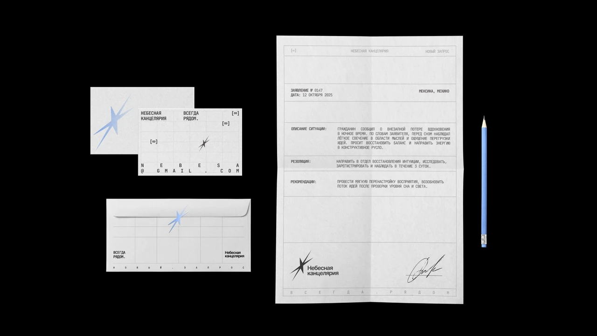
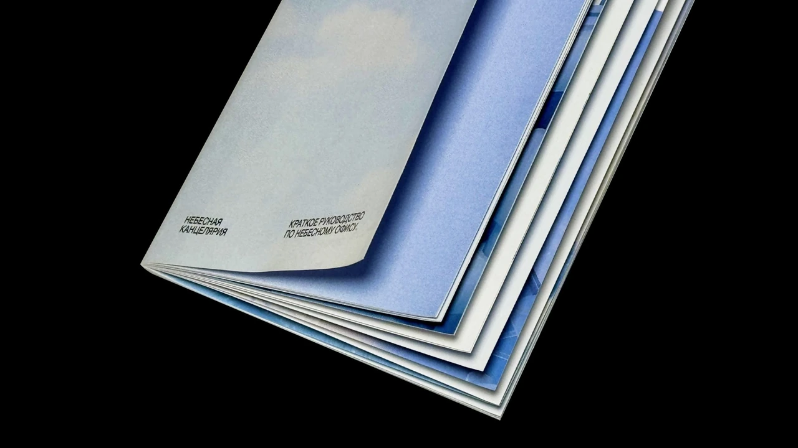
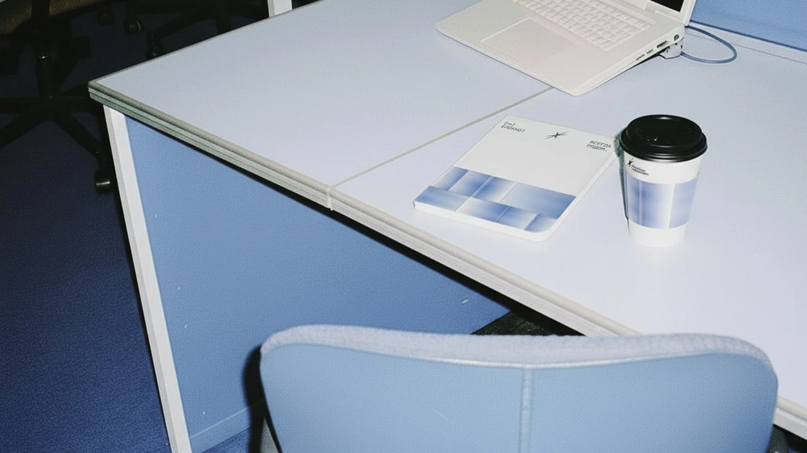
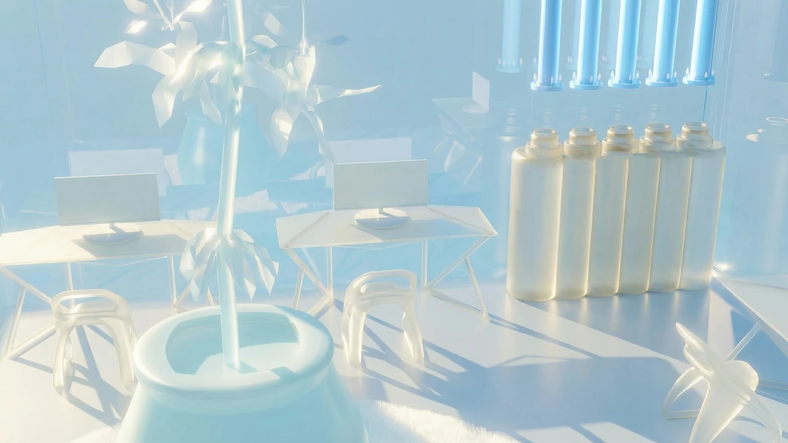
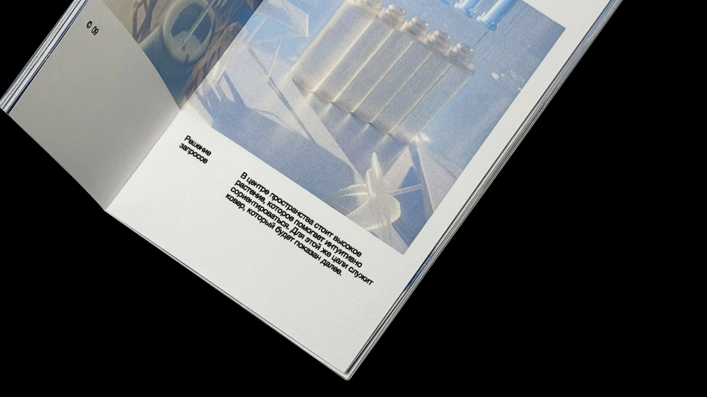
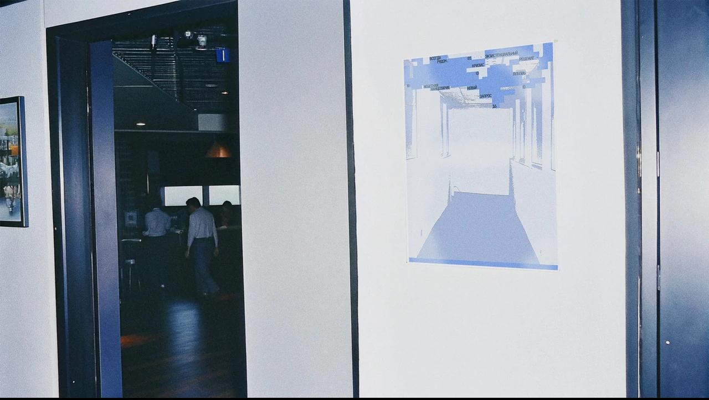
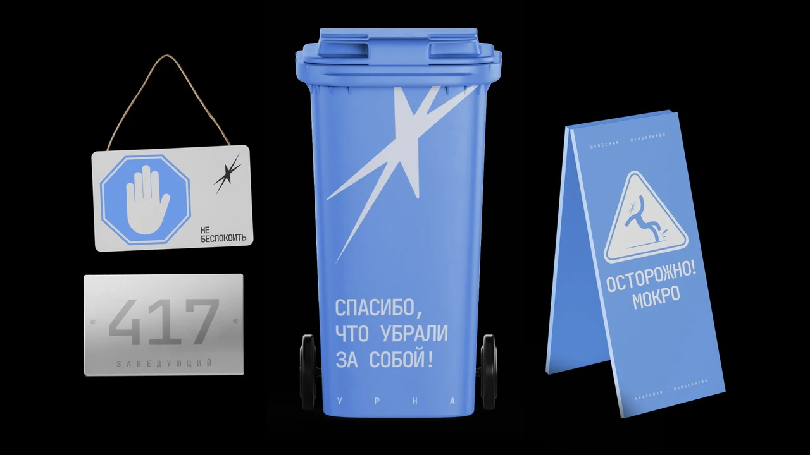
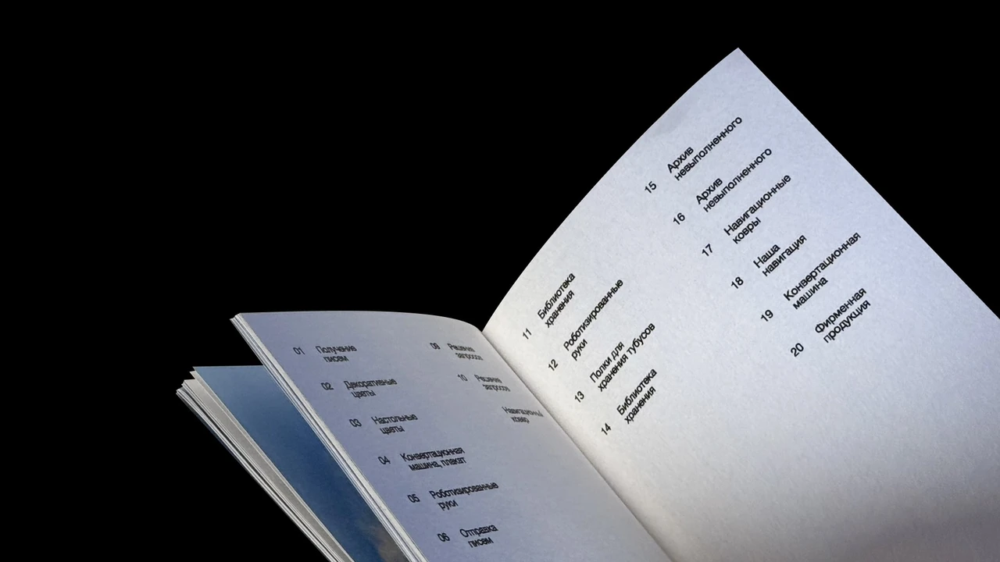

Небесная канцелярия
Проект, в котором человеческие просьбы и переживания становятся официальными обращениями в небесный офис.
Человек обращается к небесам, а сотрудники канцелярии принимают письмо, регистрируют его и направляют в нужный отдел. Здесь работают «бывшие люди», которые уже прошли земной путь и теперь помогают другим.

Задача
Нужно было придать вымышленной организации узнаваемый облик. Отправной точкой стали привычные признаки офиса, в котором у каждого обращения есть номер, форма и место в системе.
Бланки, поля документов и служебные надписи задают официальный тон. Через них личные переживания переводятся на язык канцелярии.

От документа к образу
Папка стала метафорой места для каждой человеческой истории. Её форма связывает идею проекта с привычным офисным предметом.
Градиент показывает движение от тёмного к светлому, как переход от проблемы к её решению. Белый и голубой связывают деловую среду с образом неба.
Знак
Острые лучи знака передают импульс и движение ответа в разных направлениях. В концепции это момент, когда обращение получает отклик небесной администрации. Знак используется отдельно и вместе с названием на документах и предметах.
Пространство канцелярии
Образ офиса развивается в пространственных композициях. Повторяющиеся формы, свет и прозрачные поверхности делают его похожим на упорядоченную систему, которая при этом существует по собственным, небесным правилам.




Развитие системы
Мотивы из пространственных композиций переходят в плоскую графику плакатов. Форма, цвет и служебные надписи связывают документы, интерьер и коммуникацию в один вымышленный мир.


Результат
Для проекта создана айдентика небесного офиса. Она раскрыта через документы, книгу, плакаты, рабочие предметы, одежду сотрудников и анимацию. На разных носителях сохраняется сочетание строгого порядка и фантастической среды.